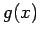

Inhalt Index DeskTop Bronstein

 Numerische Mathematik Approximation, Ausgleichsrechnung, Harmonische Analyse Approximation im Mittel Diskrete Aufgabe, Normalgleichungen, Householder-Verfahren
Numerische Mathematik Approximation, Ausgleichsrechnung, Harmonische Analyse Approximation im Mittel Diskrete Aufgabe, Normalgleichungen, Householder-Verfahren


Es seien N Wertepaare , z.B. durch Messung gefundene Werte, vorgegeben. Gesucht wird eine Funktion , deren Funktionswerte von den gegebenen Werten  in dem Sinne möglichst wenig abweichen, daß der quadratische Ausdruck
in dem Sinne möglichst wenig abweichen, daß der quadratische Ausdruck
minimal wird, und zwar in Abhängigkeit von den Parametern, die die Funktion g(x) enthält. Die Formel (19.176) stellt die klassische Fehlerquadratsumme dar. Die Minimierung der Fehlerquadratsumme mit Hilfe der notwendigen Bedingungen für ein relatives Extremum wird auch als als Methode der kleinsten Quadrate bezeichnet. Mit dem Ansatz (19.167) und den notwendigen Bedingungen  für ein relatives Minimum von (19.176) erhält man zur Bestimmung der Ansatzkoeffizienten das lineare Gleichungssystem der Normalgleichungen
für ein relatives Minimum von (19.176) erhält man zur Bestimmung der Ansatzkoeffizienten das lineare Gleichungssystem der Normalgleichungen
im diskreten Fall. Dabei werden in Anlehnung an die GAUSSsche Summensymbolik die folgenden Abkürzungen verwendet:
| (19.178a) |
| (19.178b) |
In der Regel gilt .
| Beispiel |
|
Für den Polynomansatz lauten die Normalgleichungen |